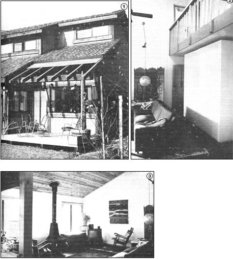

[1] The Morgan home in Davis, California has 14,000 pounds of thermal mass stored in its water walls, yet the containers blend in so well with the house design that they're barely visible. Can you spot the black south side of the bench-high water wall in the window? [2] The dwelling's largest steel tank, a 2' X 8' X 8' container, absorbs sunlight shining through the clerestory windows. [3] This window bench water tank can absorb both solar and wood-heat radiation.